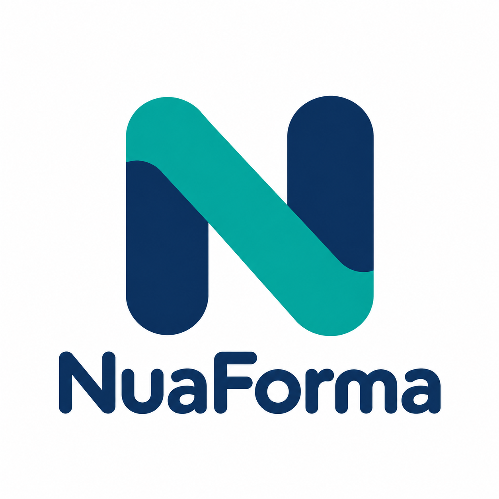
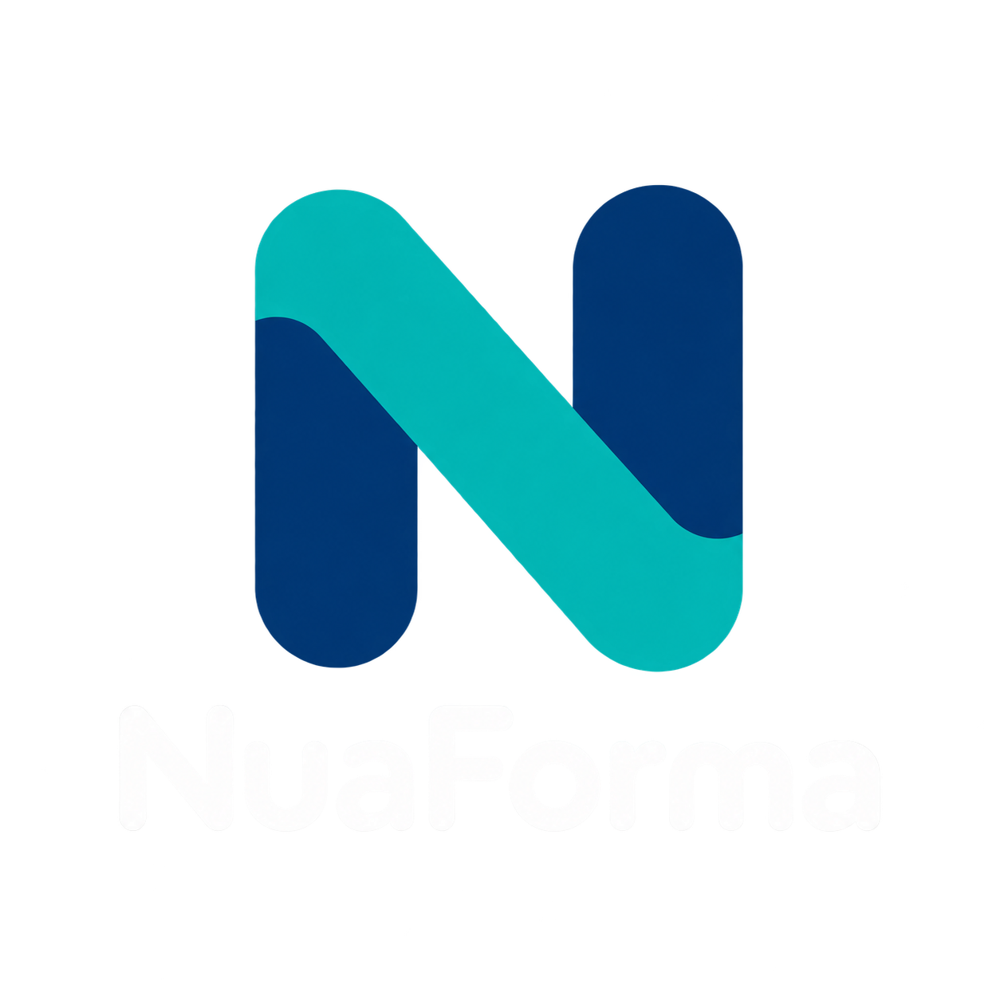

Author in Word
Keep styles, tables, images, headers and supported text boxes. Add placeholders and conditional content where they belong.


OPEN SOURCE DOCUMENT GENERATION
Bring a Word template and your data. Create documents that keep your layout, with the content your readers need.
Java 17 · Apache 2.0 · Run it on your infrastructure
Evaluation alpha. APIs are not yet stable.
{
"customer": { "name": "Ada" },
"reference": "NF-001",
"draft": false
}Prepared for Ada
| Item | Quantity |
|---|---|
| Template design | 1 |
| Document delivery | 3 |
FOR BUSINESSES & INDIVIDUALS
Letters, agreements and reports often share a structure. NuaForma fills that structure with your own data, without making you redesign the document.
Keep styles, tables, images, headers and supported text boxes. Add placeholders and conditional content where they belong.
Include or omit sections, repeat table rows, and handle nested lists and empty values. One template can serve several situations.
Generate editable DOCX, ordinary PDF or validated B-level PDF/A. Add a text watermark when a document is still a draft.
Run on your own infrastructure. Document generation needs no cloud account or network downloads. You choose your fonts and data.
This is an evaluation alpha, not a promise to reproduce every Word feature. Read the supported profiles and known limitations ↗
FOR DEVELOPERS
Embed the Java 17 engine in Kotlin or Java, or use the same engine through the REST service. Format support is discovered through public provider contracts.
dependencies {
implementation("dev.nuaforma:nuaforma-core:0.1.0-alpha.1")
implementation("dev.nuaforma:nuaforma-docx:0.1.0-alpha.1")
}DOCX-only applications do not need Docker or LibreOffice. PDF requires the separately configured isolated runtime. Maven Central ↗
WHAT COMES NEXT
Planned 0.2.0 work includes a CycloneDX SBOM endpoint and follow-up on accepted native-runtime security findings. Spreadsheet and OpenDocument providers, signable forms and template storage are future research, not available features.
View open issues ↗Use the published Linux/amd64 image. Keep it private behind an authenticated TLS gateway for remote access. Preserve non-root execution, a read-only filesystem, bounded temporary storage and the reviewed seccomp profile.
The example Dockerfile uses the published runtime unchanged. Fonts are mounted at startup, not baked into the image.
FROM ghcr.io/nuaforma/nuaforma:0.1.0-alpha.1
# Keep the image entrypoint and non-root user.
# Supply your fonts through a read-only runtime mount.Download the deployment kit, create custom-fonts and extensions directories, then run:
docker compose up -d
curl --fail http://127.0.0.1:8080/api/v1/capabilitiesThe included Compose file applies the reviewed isolation settings and mounts ./custom-fonts:/opt/nuaforma/custom-fonts:ro. Add standalone TTF/OTF faces you have rights to use, then restart. Inspect the font catalog in capabilities; names alone do not guarantee glyph coverage or embedding permission.
No custom image build is required. Download the complete Docker deployment kit: the Compose file requires the included seccomp.json. Keep that reviewed profile alongside compose.yaml; do not replace it with privileged or unconfined execution.
services:
nuaforma:
image: ghcr.io/nuaforma/nuaforma:0.1.0-alpha.1
platform: linux/amd64
init: true
user: "1000:1000"
read_only: true
cap_drop: [ALL]
security_opt:
- no-new-privileges:true
- seccomp=./seccomp.json
pids_limit: 128
mem_limit: 2g
cpus: 2
tmpfs:
- /tmp:rw,size=512m,mode=1777
ports:
- "127.0.0.1:8080:8080"
environment:
NUAFORMA_HEAP_MB: "512"
NUAFORMA_HOST: "0.0.0.0"
NUAFORMA_PORT: "8080"
volumes:
- ./custom-fonts:/opt/nuaforma/custom-fonts:ro
- ./extensions:/opt/nuaforma/extensions:ro
stop_grace_period: 15sCreate custom-fonts and extensions next to the Compose file. Place your own TTF/OTF fonts in custom-fonts, readable by UID/GID 1000; restart after changing fonts or trusted extension JARs. Both directories are mounted read-only.
mkdir -p custom-fonts extensions
docker compose up -d
curl --fail http://127.0.0.1:8080/api/v1/capabilities
# Stop the service when finished:
docker compose downThe service binds to your computer's loopback port 8080. There is no built-in authentication or TLS: use an authenticated TLS gateway before making it accessible to remote users. Check capabilities for PDF availability on your host.
The chart is a deployment starting point, not a qualified Kubernetes platform. Nodes must support Linux/amd64, unprivileged user namespaces and the reviewed seccomp profile. Install that profile on each eligible node before deploying; never use privileged mode or an unconfined profile to enable PDF.
helm upgrade --install nuaforma ./nuaforma \
--set fonts.existingClaim=nuaforma-fonts
kubectl port-forward service/nuaforma 8080:8080An existing PVC is mounted read-only at /opt/nuaforma/custom-fonts. Give UID/GID 1000 read access to a flat directory of TTF/OTF files; restart the workload after changes. Leave the claim empty if you use bundled fonts. The Service is internal only; the chart does not install a public ingress.
Check PDF availability through capabilities on your cluster. Successful HTTP readiness is not proof that the PDF sandbox can start.
TRY IT ON YOUR OWN INSTALLATION
Download a Word template with images, tables, nested conditions and repeating content. Pick a JSON request below and submit it to your NuaForma service with Bruno, curl or another HTTP client.
Nothing is uploaded to this website. It does not generate documents or connect to your service. All template/data submissions happen in your own HTTP client.
GET /api/v1/capabilities.POST http://127.0.0.1:8080/api/v1/documents with a multipart form body.request part containing the selected JSON with content type application/json. A JSON file part works too.template. Let your client create the multipart boundary..pdf or .docx, according to the request. Read JSON diagnostics if the status is not 200.curl --fail-with-body http://127.0.0.1:8080/api/v1/documents \
-F 'request=@01-final-pdfa3b.json;type=application/json' \
-F 'template=@nuaforma-example-template.docx;type=application/vnd.openxmlformats-officedocument.wordprocessingml.document' \
--output example.pdfdata holds template values. General options such as locale and watermark live under options; PDF profile options live under output.options. The website examples are complete request envelopes, not just data objects.
THE REST ENDPOINTS
/api/v1/versionPackaged version, contract version and source commit. Does not check PDF readiness.
/api/v1/capabilitiesProviders, usable formats, option descriptions and bundled/mounted font catalogs. Private uploads are never listed.
/api/v1/assessSend the JSON request envelope to assess options and provider readiness. No template is uploaded or validated.
/api/v1/documentsSend multipart request, template and optional resource files. Receive a document attachment or structured diagnostics.
/openapi.json · /openapi.yamlDownload equivalent OpenAPI definitions from your own service for documentation and client tooling.
Typical error statuses: 400 malformed transport, 422 invalid or unsupported content/options, 408 deadline exceeded, 503 provider unavailable. Consult the REST guide for the full contract and limits.
BUILT IN THE OPEN
Use NuaForma internally or embed it in your application. Feedback and small, non-confidential examples help shape what comes next.
Explore the repository ↗Evaluation alpha. Native-runtime security findings remain under review for 0.2.0. See issue #51 and the release notes. No authentication or TLS is built into the service.